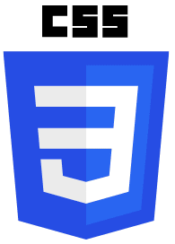
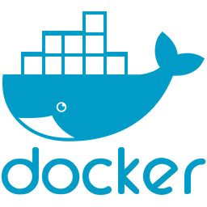
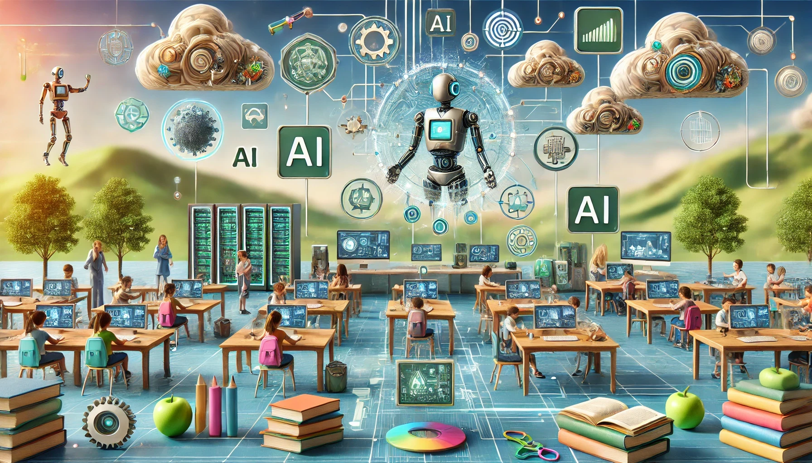

At the forefront of AI and software development, we specialise in building scalable, efficient solutions
tailored to your business needs. Our team brings a deep understanding of a diverse range of technologies and software tools, ensuring we can
craft customised systems that drive performance and innovation. From robust backend architectures to seamless cloud integrations, we deliver
solutions that are both powerful and future-proof. Whether you're seeking to enhance operational efficiency, implement AI-driven
capabilities, or modernise your existing infrastructure, our expertise covers every aspect of the software development lifecycle.
Explore the range of technologies we utilise, listed below, and let us help you transform your business with cutting-edge
solutions that evolve alongside your growth.
JavaScript
HTML

CSS
AWS
Django
React
SQL
Python
PyTorch

Docker
Kubernetes
Flask
We know AI.
At Intelligent Software Solutions, we are dedicated to delivering innovative and impactful software solutions that drive success for our clients. Our extensive portfolio showcases a diverse range of projects, highlighting our expertise in artificial intelligence, full stack development, and cutting-edge technologies. From enhancing educational platforms and streamlining business processes to developing AI-powered applications, our team consistently delivers high-quality results tailored to meet unique business needs. We invite you to explore our past projects and discover how our commitment to excellence and collaborative approach can transform your vision into reality.
At Intelligent Software Solutions, our strength lies in our collaborative spirit and unwavering commitment to efficiency. We are a dedicated team of software engineers and AI specialists who seamlessly integrate our diverse skill sets to deliver innovative and reliable solutions. By fostering a culture of open communication and mutual support, we ensure that every project is executed with precision and excellence. Our unified approach not only enhances productivity but also drives continuous improvement, allowing us to meet and exceed our clients' expectations consistently. Together, we are passionate about transforming ideas into impactful technologies that propel businesses forward.
Russ Smith BSc (Hons)
Partner, Full Stack Developer and AI Specialist
Russ is a highly skilled software engineer with extensive expertise in artificial intelligence and full stack development. He excels in designing and implementing advanced AI solutions, leveraging the latest technologies to enhance user experiences and system performance. Russ is proficient in a variety of programming languages and frameworks, including Python, JavaScript, PyTorch, and Django, as well as numerous cloud services. His strong problem-solving abilities enable him to optimize systems for accuracy, scalability, and efficiency, making him a valuable leader in both AI and web development domains.
Managing Director, Head of AI, Infrastructure and API Development
Fraser is an accomplished software engineer specializing in artificial intelligence and full stack development. He is adept at creating innovative AI-driven applications and robust web platforms, utilizing cutting-edge technologies to deliver high-quality solutions. Fraser is well-versed in machine learning algorithms, neural network architectures, and modern development frameworks such as Python, JavaScript, TensorFlow, and React. His ability to tackle complex challenges and enhance system performance ensures scalable and efficient outcomes, positioning him as a key contributor in both AI and web development projects.
Partner & Senior AI/Backend Developer and Space Plasma Physics Expert
Matt is a seasoned AI developer with a strong background in data analysis and machine learning. He brings a wealth of knowledge in developing and deploying AI models, applying his skills to a variety of technical and interdisciplinary projects. Matt is proficient in backend development using Django and has extensive experience in data processing and analysis. His expertise in machine learning frameworks and collaborative filtering techniques allows him to create impactful solutions across scientific and commercial applications. Passionate about open-source collaboration, Matt leads innovative initiatives in AI and machine learning, driving progress and excellence in the field.
We invite you to explore a small sample of our portfolio of past projects, where innovation meets excellence. At Intelligent Software Solutions, we take pride in delivering bespoke software solutions tailored to meet the unique needs of each client. From cutting-edge AI-driven systems to seamless cloud integrations and full-stack development, our work reflects a commitment to quality and precision. By viewing our past projects, you’ll gain insight into our approach, expertise, and the tangible results we’ve delivered for businesses just like yours. Let us show you how we can help transform your vision into reality.n
AI-Powered Music and Social Media Platform
AI Content Moderation System
Natural Language Processing for B2B
AI-Powered CV Generator SaaS

Classroom Support Platform Using LLMs
AI-Based Audio Source Separation and Reversal
×
SERVICES
At Intelligent Software Solutions, we are committed to delivering exceptional software solutions tailored to meet the unique needs of our clients. Our comprehensive range of services encompasses cutting-edge artificial intelligence, full stack development, cloud infrastructure management, and more. Leveraging the latest technologies and industry best practices, our dedicated team ensures that each project is executed with precision, efficiency, and innovation. Whether you're looking to enhance your business operations, implement AI-driven capabilities, or develop scalable web applications, we partner with you to transform your vision into reality. Explore the services below to discover how our expertise can propel your business forward.
Leverage cutting-edge artificial intelligence techniques to design and build bespoke AI systems tailored to your business needs. With extensive experience in creating AI solutions from scratch, we specialise in developing production-ready and scalable AI systems using technologies such as TensorFlow, PyTorch, and advanced transformer models. Whether it's developing a sophisticated recommendation engine or an intelligent automation tool, our expertise ensures robust and efficient AI systems that drive real business value.
Create and manage high-performance RESTful APIs to enable seamless integration and interaction between your systems. From initial design through to production deployment, we ensure APIs are scalable, secure, and tailored to meet specific requirements. Utilizing Django and Flask, we build APIs that facilitate efficient data exchange and system interoperability, enhancing the overall functionality of your applications.
Design and deploy scalable cloud infrastructure solutions using AWS, GCP, and other cloud platforms. We provide end-to-end management of cloud resources, including setting up Kubernetes clusters, optimising costs, and ensuring robust security. Our services include cloud architecture design, implementation of best practices for performance and scalability, and management of administrative aspects such as VPNs and cloud access.
Develop and deploy sophisticated machine learning models that solve complex problems and enhance business operations. From training custom models with deep learning frameworks to deploying pre-trained models for real-time applications, we handle the entire lifecycle of machine learning solutions. Our experience includes working with neural networks, reinforcement learning, and ensemble methods to achieve optimal performance and accuracy.
Implement advanced AI systems for content moderation across various media types including text, audio, images, and video. Our solutions are designed to handle large-scale content moderation tasks with precision, leveraging custom AI models to ensure compliance with specific client requirements. This service is ideal for businesses needing scalable, adaptable content moderation solutions to maintain quality and safety across their platforms.
Technologies Used: Python, Django, TensorFlow, Custom AI Models.
Create NLP solutions to process, analyse, and derive insights from textual data. Whether it's building chatbots, sentiment analysis tools, or automated text processing systems, we utilise state-of-the-art NLP techniques to enhance your business capabilities. Our expertise includes developing systems that improve accuracy and reduce manual intervention, providing measurable improvements in efficiency and effectiveness.
Transform raw data into actionable insights with comprehensive data analytics and visualisation services. Using tools such as pandas and NumPy, we analyse complex datasets to uncover trends and patterns. We also create interactive visualisations that make it easier for stakeholders to understand and act on data-driven insights. This service is crucial for businesses seeking to make informed decisions based on data.
Technologies Used: Python, Pandas, NumPy, Data Visualisation.
Offer end-to-end full stack development services to build and integrate web applications. From backend development with Django to frontend implementations with JavaScript, we ensure a seamless and functional user experience. Our approach covers everything from database design to API development, providing a comprehensive solution that meets all your application needs.
Technologies Used: Python, Django, JavaScript, SQL, Full Stack Development.
Develop AI-powered solutions to assist job seekers in creating professional-quality CVs. Our service automates the CV creation process by analysing job descriptions and personal details to generate optimised, tailored CVs. This solution is particularly valuable for job seekers looking to improve their job application materials with minimal effort.
Optimise and fine-tune existing AI models to enhance performance and efficiency. Using techniques like model distillation, quantisation, and mixture of experts, we improve the accuracy and computational efficiency of your models. Whether you need to reduce model size for deployment on limited hardware or boost performance for complex tasks, we provide tailored optimisation strategies to meet your specific requirements.
Technologies Used: PyTorch, TensorFlow, Model Distillation, Quantisation, Mixture of Experts.
Implement automated systems for codebase modifications using natural language prompts. Our custom-built solutions integrate with platforms like Slack to enable automatic code updates, test runs, and GitHub pull requests. This service is ideal for teams looking to streamline development workflows and reduce manual coding effort, increasing productivity and consistency.
Develop and implement reinforcement learning systems for complex decision-making tasks. From game-playing agents to competitive trading algorithms, we build RL systems using methodologies like Q-learning, deep Q-learning, and proximal policy optimisation. Our solutions are designed to learn and adapt in dynamic environments, providing high-performance results across a range of applications.
Technologies Used: Reinforcement Learning, Q-Learning, Deep Q-Learning, Proximal Policy Optimisation.
Create simulations and models to analyse and predict various scenarios within your business or research domain. Utilizing techniques from simulations and optimisation, we develop models that provide insights into system behaviour and performance under different conditions. This service is valuable for testing hypotheses, optimising processes, and making data-driven decisions.
Technologies Used: Python, Simulations, Optimisation, Data Analysis.
Implement sentiment analysis solutions to understand and leverage customer feedback, social media trends, and market sentiment. Using advanced NLP techniques, we build systems that analyse textual data to gauge sentiment, providing actionable insights for business strategy and customer engagement.
Offer comprehensive management of the entire software development lifecycle, from initial concept to deployment and maintenance. We oversee all stages of development, ensuring high-quality deliverables and efficient project execution. Our expertise includes project management, code quality assurance, and continuous integration/continuous deployment (CI/CD) practices.
Technologies Used: Python, Django, CI/CD, Project Management, Full Software Development Cycle.
Design and develop embedded systems for specialised hardware applications. With experience in working with FPGAs and other hardware platforms, we create solutions that integrate software with hardware to achieve specific functionality. This service includes development of firmware, hardware-software integration, and system testing.
Provide research and consultation services in artificial intelligence and machine learning. We offer expert advice on the latest trends, technologies, and methodologies, helping you navigate complex AI challenges and make informed decisions. Whether you need guidance on cutting-edge research or practical application of AI techniques, our insights drive innovation and strategic advantage.
Technologies Used: AI Research, Machine Learning, Python, Advanced Algorithms.
Design and implement sophisticated data engineering solutions to manage, process, and analyse large datasets efficiently. We create robust data pipelines, ensure data quality and integrity, and optimise data storage and retrieval. This service is ideal for businesses needing scalable solutions for handling big data, integrating various data sources, and enabling advanced analytics.
Technologies Used: Python, SQL, Data Engineering, ETL Processes, Data Pipelines.
Develop intelligent chatbots and conversational AI systems to enhance customer interaction and automate routine tasks. Using natural language processing and machine learning, we build chatbots that understand and respond to user queries effectively, providing a seamless and engaging user experience.
Integrate proprietary AI systems into your existing infrastructure to enhance functionality and performance. We ensure seamless integration of AI models and solutions with your current systems, optimising workflows and enabling new capabilities. This service includes designing integration strategies, implementing solutions, and providing ongoing support.
Technologies Used: Python, API Integration, AI Systems, System Architecture.
Provide high-performance computing (HPC) solutions for complex computations and data processing tasks. We design and deploy systems that leverage advanced hardware and software configurations to deliver exceptional performance for tasks such as simulations, data analysis, and AI model training.
Develop AI-driven security solutions to protect your systems and data from threats. We build advanced systems that use machine learning to detect and respond to security incidents, enhance threat detection, and automate security operations. This service is essential for businesses seeking to improve their security posture through innovative technologies.
Technologies Used: AI Security, Machine Learning, Python, Security Operations.
Implement automated testing frameworks to ensure high-quality software deliverables. We design and execute automated tests for various application layers, including unit tests, integration tests, and end-to-end tests. This service helps identify issues early in the development process, reducing manual testing efforts and improving overall software quality.
Develop IoT solutions to connect and manage smart devices and sensors. We design and implement IoT systems that collect, analyse, and act on data from connected devices. This service includes developing firmware, creating data pipelines, and ensuring secure communication between devices and backend systems.
Technologies Used: IoT, Python, Firmware Development, Data Pipelines, Security.
Create solutions for real-time data processing and analytics to enable instant insights and decision-making. We design systems that handle streaming data from various sources, perform real-time analysis, and provide actionable information. This service is ideal for applications requiring immediate data processing, such as financial trading systems or live monitoring solutions.
Technologies Used: Real-Time Data Processing, Python, Streaming Analytics, Data Engineering.
Conduct training workshops and seminars on artificial intelligence and machine learning. We offer educational sessions covering fundamental concepts, practical applications, and advanced techniques. These workshops are tailored to various skill levels and are designed to empower teams and individuals with the knowledge needed to leverage AI and ML effectively.
Technologies Used: AI Training, Machine Learning, Python, Workshops.
Provide comprehensive technical documentation and knowledge transfer services to ensure smooth handovers and effective utilisation of developed systems. We create detailed documentation, including system architecture, user guides, and API references, and offer training sessions to equip teams with the necessary knowledge to maintain and extend the systems.
Technologies Used: Technical Documentation, Knowledge Transfer, Python, System Architecture.
CONTACT
At Intelligent Software Solutions, we understand that every business has unique challenges and goals. That's why we're here to offer tailored software solutions that drive innovation and efficiency. Whether you're looking to enhance your existing systems, implement cutting-edge AI technologies, or develop custom applications from scratch, our expert team is ready to partner with you every step of the way. Take the first step towards transforming your business by reaching out to us today. Fill out our contact form below, and let us help you turn your vision into reality with precision and excellence.